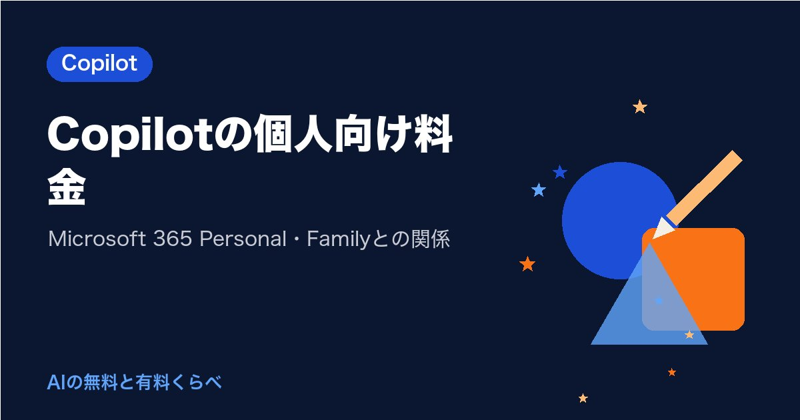

Copilotの個人向け料金｜Microsoft 365 Personal・Familyとの関係

自宅のPCでも、WordやExcelの中でCopilot（コパイロット）を使えたら便利ですよね？
結論から言うと、個人向けのCopilotは、単体の料金ではなく「Microsoft 365 Personal・Family・Premium・Pro」の中に含まれる形で提供されています。2026年10月21日時点の公式ページでは、Personalが月¥2,130（年¥21,300）、Familyが月¥2,740（年¥27,400）、Premiumが月¥3,200（年¥32,000）です。
チャットだけなら無料のCopilotでも使えるので、まず無料で試してから選ぶ流れが無理なく進められます。
確認日：2026年10月21日（料金・上限は各社の公式情報で確認。変わることがあります）
個人向けの料金を表で見る
公式の個人向けプランのページと、プランの比較ページで確かめた金額です。
| プラン | 月払い | 年払い | 使える人数 | Copilotの使える量 |
|---|---|---|---|---|
| 無料のCopilot | 0円 | 0円 | 1人 | 上限あり（数字は非公開） |
| Microsoft 365 Personal | ¥2,130 | ¥21,300 | 1人 | 無料版よりも多く |
| Microsoft 365 Family | ¥2,740 | ¥27,400 | 1〜6人（AIは持ち主だけ） | 無料版よりも多く |
| Microsoft 365 Premium | ¥3,200 | ¥32,000 | 1〜6人（AIは持ち主だけ） | 大きな利用枠 |
| Microsoft 365 Pro | ¥16,000（月払いのみ） | なし | 公式ページで確認を | 最も高い利用上限 |
年払いにすると、Personalは年¥4,260、Familyは年¥5,480、Premiumは年¥6,400安くなると公式ページに書かれています。Personalを年払いにすると、月あたりに直して約¥1,775です。
月1,000円までに収めたい方には、どの有料プランも少し上回ります。だからこそ、無料のCopilotでどこまで用が足りるかを先に確かめておくと、納得して選べます。
以前の「Copilot Pro」はどうなった？
以前は、個人向けに「Copilot Pro」という名前の有料プランがありました。今回確かめた公式の個人向けプランのページ（2026年10月21日時点）に並んでいたのは、Microsoft 365 Personal・Family・Premium・Proで、Copilot Proの名前は見当たりませんでした。すでに契約している方は、Microsoftアカウントの「サービスとサブスクリプション」で、今の契約内容を確かめてみてください。
料金で増えること（無料と有料の違い）
有料プランで増えるのは、大きく分けて「アプリの中で使えること」と「使える量」です。
| 項目 | 無料 | 有料（Personal・Family） | 有料（Premium） |
|---|---|---|---|
| チャット | 使える | 無料版よりも多く | 大きな利用枠 |
| Word・Excel・PowerPoint・OutlookのCopilot | なし | デスクトップアプリで使える | デスクトップアプリで使える |
| AIによる画像の作成 | 使える | 無料版よりも多く | より多く |
| 調べ物や分析を代わりに進める機能 | なし | なし | リサーチ ツール、アナリストなど |
| 混んでいる時間の優先 | なし | 公式ページで確認を | 優先アクセスの記載あり |
| クラウドの保存容量 | なし | Personal 1TB、Family 2TB（共有） | 2TB（共有） |
たとえば自宅で、町内会の会計表をExcelで整えたり、子どもの学校の配布物をWordで作ったりするなら、アプリの中で使えるPersonal以上が役立ちます。チャットで質問や下書きをするだけなら、無料のCopilotでも十分なことが多いです。
なお、Excelの中のCopilotは、ファイルをOneDriveに保存して自動保存をオンにしておく必要があり、保存していないファイルには使えないと公式に書かれています。
Familyで気をつけたい「AIは持ち主だけ」
Familyは6人まで使えるので、家族でまとめて入ると割安に見えます。ただ、公式ページには「Copilot の AI 機能は現在、サブスクリプション所有者のみが利用でき、他の家族メンバーは対象外」と書かれています。
WordやExcel、OneDriveの保存容量は家族で分け合えますが、Copilotを使えるのは契約した本人だけです。家族それぞれがAIを使いたい場合は、家族の分は無料のCopilotで、と分けて考えると予算を立てやすくなります。
個人のプランを会社の仕事に使う前に
公式ページには、条件がそろえば、個人のプランのCopilotを、一部のアプリで仕事用のファイルに使えるという案内があります。その条件は、勤め先が対象の法人向けの契約を持っていて、複数のアカウントを切り替えて使う設定（マルチアカウント アクセス）を有効にしていることです。
ここは会社ごとに扱いが分かれるところです。使う前に、会社の決まり（利用規程）を先に確かめておくと安心です。社外秘の資料や、お客さまの個人情報は入れないようにします。会社のPCのCopilotについてはCopilotの無料と有料の違い｜会社のPCのCopilotはどっち？、会社で入れる場合の料金はCopilotの法人向け料金｜Microsoft 365 Copilotを会社で入れるときで整理しています。
あなたの使い方ならどちら？
| あなたの使い方 | 向いている選び方 |
|---|---|
| 質問や下書きにときどき使う | 無料のCopilotから |
| 自宅のWord・Excelで資料を作ることが多い | Personal |
| 家族もWordやOneDriveを使う（AIは自分だけでよい） | Family |
| 長い調べ物や分析もAIに任せたい | Premium |
PersonalとPremiumは、公式ページに「1 か月無料で試す」の案内があります。試すときは、終わる日を手帳に書いておくと、自動で有料に切り替わる前に続けるかどうかを落ち着いて決められます。
浮いた時間を、平日の夜に家族と話す時間や、自分の学びの時間に回せたら、払った金額以上の価値を感じられるかもしれません。
確かめた公式の情報
まとめ
個人向けのCopilotは、Microsoft 365 Personal（月¥2,130）・Family（月¥2,740）・Premium（月¥3,200）・Pro（月¥16,000）の中に含まれる形です。チャットだけなら無料のCopilotでも使え、WordやExcelの中で使いたいときにPersonal以上が候補になります。
小さな次の一歩として、まず1週間、無料のCopilotで「自宅の用事」を3つ頼んでみませんか。その3つのうち、アプリの中で使えたら助かるものはいくつありましたか？
まずは無料版で、今日の用事を1つだけAIに頼んでみませんか。足りないと感じた所が、有料にするかを決める一番の材料になります。
あなたが最初に任せたい仕事は何ですか？
最後まで読んでくださり、ありがとうございました。